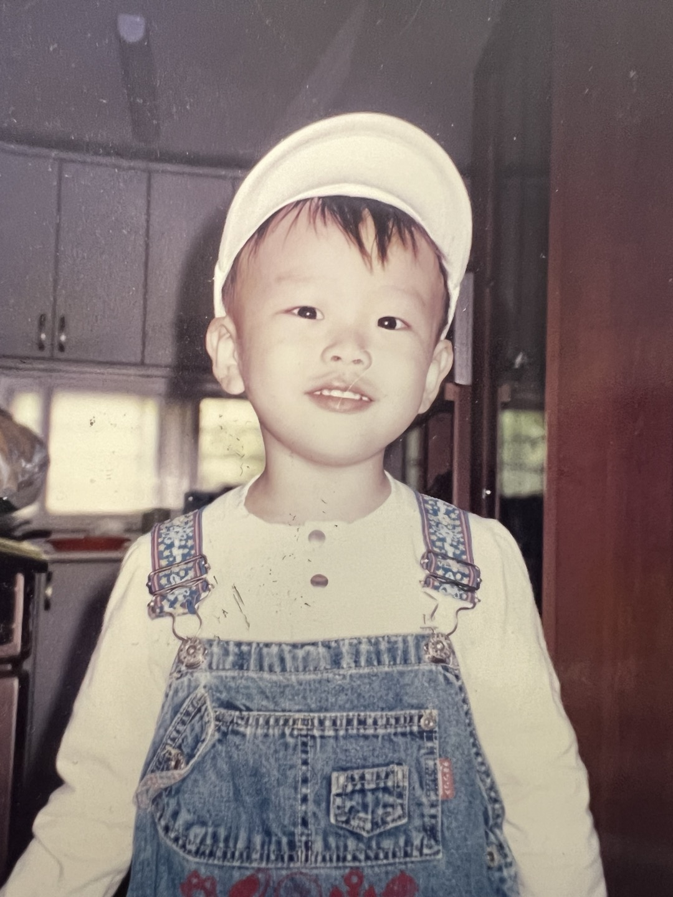

유년기
유년기 시절입니다. 정확히 기억이 나지는 않지만 놀이터에 나가서 열심히 뛰어 놀았던 기억이 있습니다. 걱정이 없고 천진난만한 시절이었습니다.
나이: 24살
학번 및 학년: 2020510001 3학년
어릴 때 부터 항상 들어왔던 말이 '긍정적으로 생각해라'였습니다.
그러면서 자연스럽게 긍정의 마인드를 갖게 되었고
이후 힘든
일이나 화나는 일이 있을
때
항상
긍정적으로 생각하면서 난관을 극복하게 되었습니다.
확실한 목표가 생기면 그것을 이루려는 동기부여가 되면서
할 수 있는 한 최대한으로 노력해서 대부분 달성합니다.
국제통상학부임에도 불구하고 정보융합학부
과목을 듣는 것도
취업을 위한 강한 동기부여가 있기 때문에 하고 있는 것입니다.
사람들과의 소통을 좋아합니다.
그러다보니 저절로 사람을 배려하는 습관이 만들어진 것 같습니다.
배려함으로써 약간의 손해가 있을 수 있지만
그 사람과의 관계와 재미를 생각하면
배려를 하는 삶은 그만큼의 충분한 가치가 있습니다.
유년기 시절입니다. 정확히 기억이 나지는 않지만 놀이터에 나가서 열심히 뛰어 놀았던 기억이 있습니다. 걱정이 없고 천진난만한 시절이었습니다.
중학생 시절입니다. 친구들과 노는 것을 좋아했고 특히 야구 시청을 좋아하였습니다.
고등학생 시절입니다. 대학교 진학에 관해 걱정이 많은 시기였고 이때부터 공부라는 것을 열심히하기 시작하였습니다. 이때는 야구보다는 축구 시청에 더 관심이 있었습니다.

현재 저의 모습입니다. 현재에는 제 적성에 맞는 직업을 찾고있습니다. 제 적성에 맞는 일을 해야 행복할 것이라 생각하기 때문입니다. 그리고 현재에는 야구 시청에 더 관심이 있습니다.